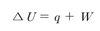
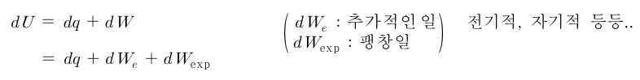
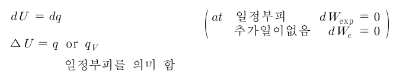
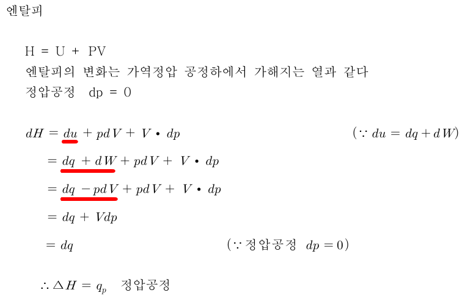
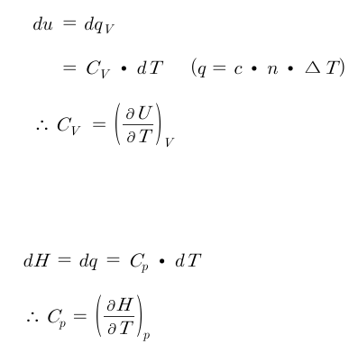
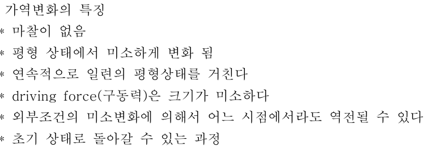

열역학 법칙 용어 정리
@계,주변부,경계
-계: 공정의 영향을 받는 범위
-주변부: 계를 제외한 나머지 부분
-경계: 계와 주변부를 나누는 부분
@계의 종류
-닫힌계: 에너지는 출입이 되지만 물질은 출입이 안된다.
-열린계: 에너지와 물질이 둘 다 출입가능
-고립계: 에너지와 물질이 출입 불가능(우주)
이 중 닫힌계와 열린계가 주요 관심대상이다.
@열역학 법칙
제 1법칙: 고립계의 내부에너지는 일정하다-에너지 보존 법칙
제 2법칙: 자발적 변화는 비가역변화이며 엔트로피가 증가하는 방향으로 진행된다.
제 3법칙: T=0에서 순물질의 엔트로피는 0이다.
@열역학 제 1법칙
1)줄의 실험: 일정량의 일을 통해 온도증가를 확인 함->열은 에너지의 한 형태임을 확인함
2)열역학 제 1법칙(일반적인 표현): 에너지는 여러 가지 형태를 가질 수 있지만 에너지의 총량은 일정하다.
1cal= 4.2J
3)내부에너지: 열역학적인 관점에서 system의 전체 에너지를 내부에너지로 정의함
(분자간 인력+분자 운동에너지+...)
내부에너지는 상태함수이므로 초기 및 특정시점의 상태에만 관련 있음.
닫힌계인 경우에 한하여 내부에너지의 변화는 일과 열에만 영향을 받음


보통 추가적인 일은 생각하지 않고 팽창일을 한다고 치면 dWe는 없다고 볼 수 있다.
이제 일정부피 공정에서는 dw=-pdv에서 일이 없으므로 다음 관계가 성립한다.

즉 내부에너지의 변화량은 등적과정일 때 가해진 열과 같다.
4)엔탈피

엔탈피 변화는 가역 정압 과정에서 가해지는 열과 같다.
5)열량
q=C△T =c*m* △T (c는 비열, C는 열용량)
이때 비열의 경우 2가지가 존재한다.
✅ 1. 정압 비열
정의: 압력이 일정할 때 1kg의 물질을 1K 올리는 데 필요한 열량
주로 사용하는 경우: 대부분의 실생활 및 공정에서 압력이 일정하므로 더 많이 사용합니다.
기체의 팽창 가능 → 일부 에너지가 부피 팽창에 사용됨
✅ 2. 정적 비열
정의: 부피가 일정할 때 1kg의 물질을 1K 올리는 데 필요한 열량
사용되는 경우: 주로 이론 계산이나 밀폐 용기에서 기체를 다룰 때 사용
부피가 고정 → 모든 열이 온도 증가에만 사용됨

@가역 변화: 언제든지 과정이 되돌려질 수 있는 변화
